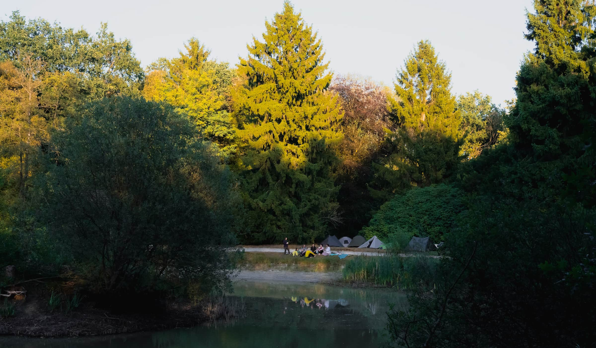
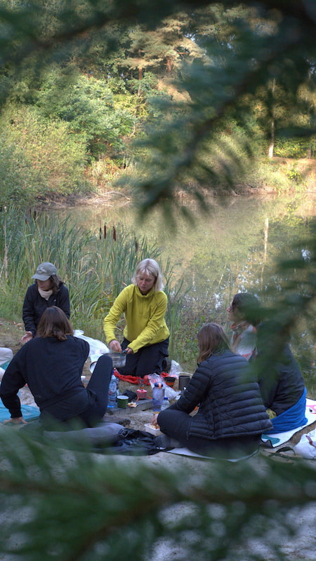
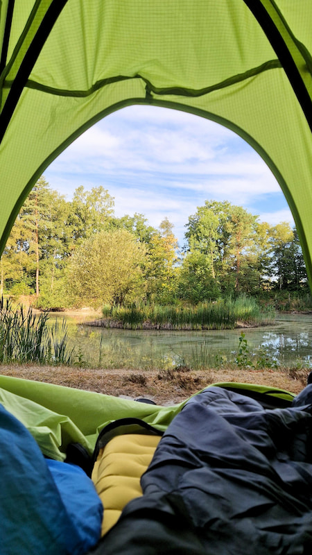
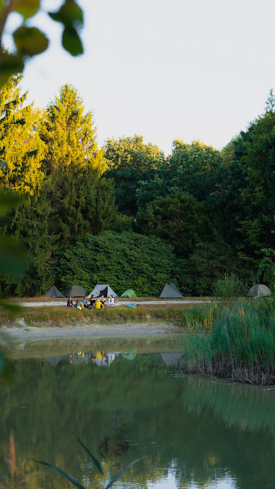
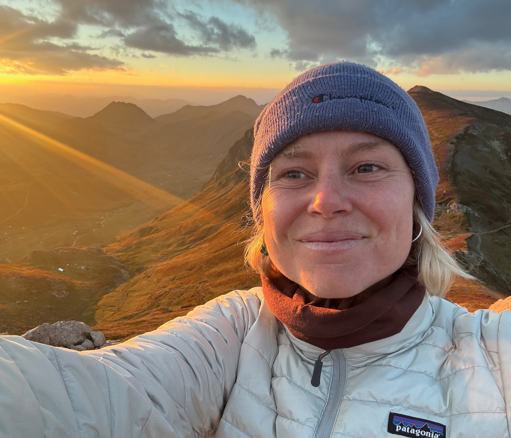
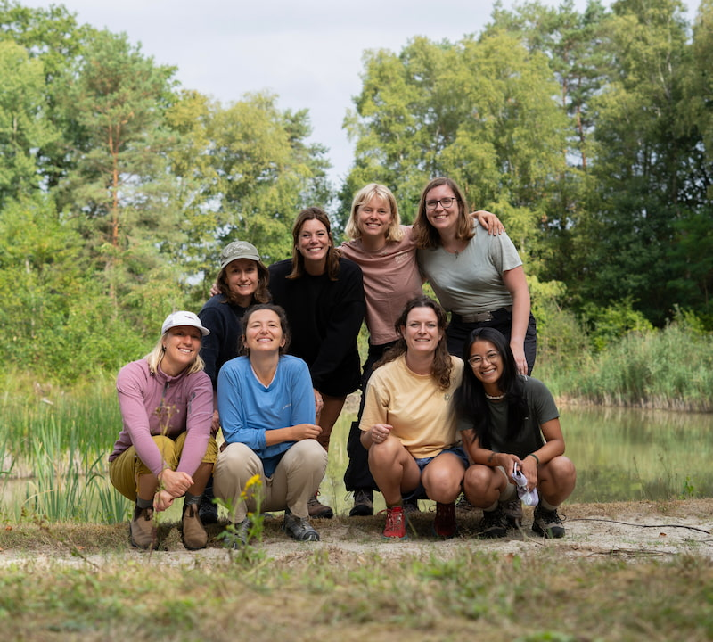

Small enough to fit in a weekend, big enough to feel like a real adventure
Upcoming adventuresA micro-adventure is a small, short adventure into nature, close to home, that still feels like the real thing. The term comes from adventurer Alastair Humphreys, who wanted to prove you don't need a plane ticket or a big budget to feel that same spark.
It can be hiking with a tent on your back, a night under the stars, a day out mountainbiking, getting up early for sunrise, or hopping from hut to hut. What it looks like matters less than what it feels like: being offline for a bit, outside, and surrounded by women who get why you would want that.



Loading dates…
New adventures are being planned. Join the WhatsApp community and you'll be the first to know when dates go live.
Join the communityWhether you've already been on lots of adventures or you're keen to give it a try, this is for you. It's for women who want to spend more time outdoors, who collect outdoor inspiration but rarely get around to living it, and who want to meet other women who love it too.
You want to spend more time in nature
You love trying small adventures
You want to explore the beauty closer to home
You've saved more hikes than you've actually done
You want to meet likeminded women
You like the idea of a day or weekend with no plan
If even one of those felt familiar, you're in the right place.
I've been in love with mountains, hiking trails, and sleeping under the stars for years. The kind of weekends where you walk for hours, cook dinner on a tiny stove, and fall asleep listening to the wind in the trees. Those are the ones I keep coming back to.
What started as my own adventure became something I wanted to share. So I started organising small weekends for other women: to make the outdoors feel less out of reach, and a lot more fun.
If you've been waiting for the right group, or the right moment, or just someone else to plan the route, I'd love to have you along.
x Puck

A WhatsApp community for women who love the outdoors and want to do more of it. Get updates on upcoming adventures, meet other (outdoorsy) women, and get a feel for the vibe before you commit to anything.
No spam or endless messages, just the occasional update and a heads-up when a new adventure is being launched.
And it's not only about our trips: planning your own hike or weekend away? This is a good place to find a buddy for that too.
P.S. You can always leave with one click, so why not?
Join the community
Hiking and wildcamping weekends are the core of it, but not the only thing — think day trips close to home, a night in a simple hut instead of a tent, winter adventures, and other formats as they come up. Every listing says exactly what kind of adventure it is and what to expect.
Not at all. Whether you're brand new to being outside or you've done this a hundred times, you'll fit in. Some women come for the adventure, some for the community, some just want time outside with people who get it.
Depends on the adventure — every listing spells it out. As a starting point, most people already own what they need: proper shoes, layers, something for the rain. Missing something specific, like a sleeping bag for an overnight? I can point you to rentals or gear worth borrowing.
Depends on the trip. For an overnight, dinner and breakfast are included and you bring your own lunch and snacks; for a day adventure, you'll usually sort your own food. Each listing says which, and I'll send tips on what works well for whatever we're doing.
Yes. I'm with you for the whole thing, routes (and camping spots, for anything overnight) are scouted in advance, and small groups mean nobody gets lost in the shuffle.
We go anyway, that's part of it. You'll be prepped with the right gear, and honestly, a rainy hike — or a wet night in a tent — makes for the best stories. If the weather's genuinely unsafe, we adapt.
Depends on the adventure, and each listing says what to expect. As a rule: if you can be active outdoors for a few hours, you're set. It's not about a punishing pace — we move so people can still chat and look around.
Everyone who identifies as a woman is welcome — cis women, trans women, and anyone whose experience or identity feels connected to womanhood and who'd feel at home in a women-centered space. What matters here is kindness, respect and looking out for each other, not fitting a strict definition. Not sure if this is the right space for you? Reach out and ask — you're always welcome to.
I started these because I wanted a space where women could try new things and ask the obvious questions without feeling like they already had to know what they're doing. Outdoor spaces can feel male-dominated, and that changes how comfortable you feel showing up as a beginner. This isn't about excluding anyone — it's about building something around a specific kind of group, where people can show up as they are, ask for help without embarrassment, and meet others looking for the same thing. My hope is just that more women end up outside more often, doing things they weren't sure they could.